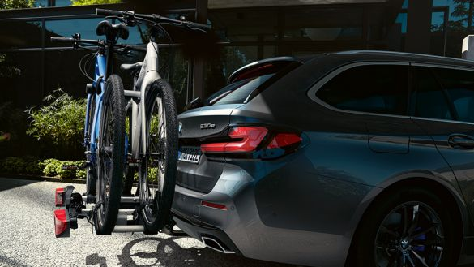
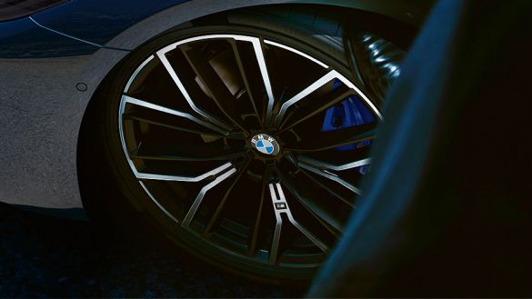
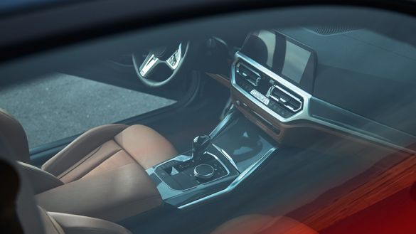

BEFORE THE JOURNEY: INCREASE DRIVING EFFICIENCY.

REMOVE UNNECESSARY LOAD AND ADD-ON PARTS.
As additional weight increases fuel consumption, you should remove any unnecessary load from the vehicle before you start your journey. Furthermore, add-on parts such as roofboxes or bicycle carriers should be removed after use, as they adversely affect the aerodynamics and hence also lead to increased consumption. Carrying out these preparatory measures is a simple way of further increasing the efficiency of your BMW before you even set off.

THE OPTIMUM TYRE PRESSURE.
Another way of preparing for an efficient trip involves checking the tyre pressure and correcting it as necessary. A tyre pressure below the recommended value increases wear on tyres and fuel consumption. In a partially loaded vehicle, ECO filling pressure* can be used to achieve the lowest possible fuel consumption. *This function is currently only available within the European Union and in the United Kingdom.

CONDITIONING PRIOR TO DEPARTURE.
The function Conditioning prior to departure* allows you to set a pleasant temperature inside your vehicle with an electric or hybrid drive before you set off on your journey. During the course of the charging operation, this measure can significantly increase the electric range as the necessary energy demand is saved during the trip. This allows you to combine efficiency and comfort. *This function is only available for BMW vehicles with an electric or hybrid drive.
DURING THE JOURNEY: REDUCE CONSUMPTION.
Reduce fuel and energy consumption during the journey with intelligent functions from BMW EfficientDynamics.
Combustion engine, plug-in hybrid or electric car: regardless of which drive system you have opted for, your BMW supports you in practising an efficient driving style during the journey with intelligent functions such as the Route-Ahead Assistant in ECO PRO mode. As a general rule, infrequent and minor acceleration and deceleration situations significantly reduce consumption. For purely electric vehicles, in particular, this means a significantly increased range. You should therefore think ahead while driving in order to avoid or minimise braking situations. Above all, while driving on the motorway, cruising speed is the greatest factor influencing the consumption. Reducing speed by just 20 km/h, for example, means a saving in consumption of up to 20%. With BMW EfficientDynamics you combine low consumption with a relaxed way of driving.